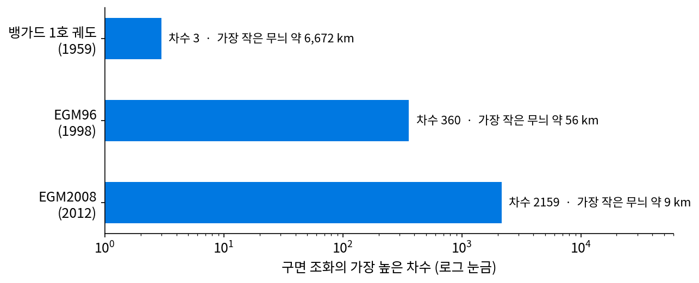
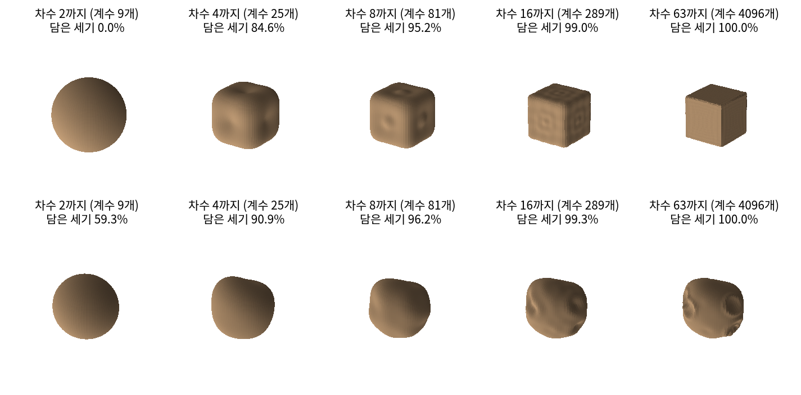
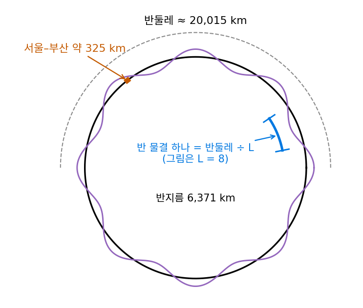
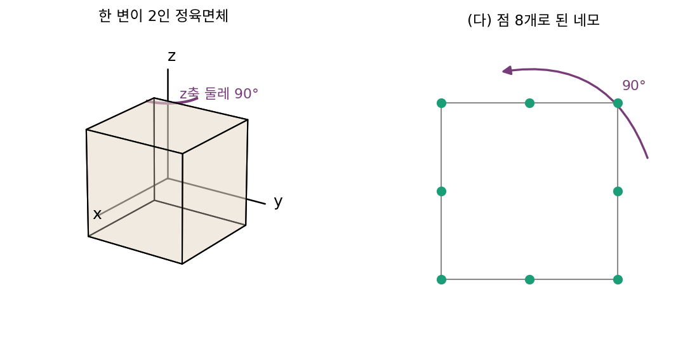
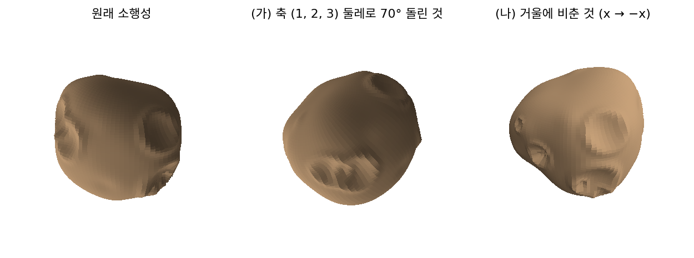

구면 위의 모양: 구면 조화를 차수 순으로
지구, 달, 소행성처럼 공 모양에 가까운 물체의 겉모양은 방향마다 반지름 하나로 적을 수 있으니, 바탕이 공의 표면이다. 공 표면에는 끝이 없어서 가로·세로 바둑판을 깔 수 없지만, 공 위에는 구면 조화라는 물결이 있었다. 공을 어느 쪽으로 돌려도 같은 차수끼리만 섞이는 물결이고, 차수 l마다 2l + 1개가 있으며, 차수가 높을수록 공 위에서 촘촘하게 출렁인다. 구면 조화를 하나씩 더해 모양을 그려 가면 모양은 어떤 차례로 나타나고, 몇 차수까지 더해야 모서리나 구덩이가 보일까?
역사: 인공위성이 잰 지구의 차수
지구 모양을 구면 조화의 계수로 적는 일은 인공위성과 함께 빨라졌다. 지구가 완전한 공이라면 위성은 같은 궤도를 되풀이해 돌지만, 지구 질량이 고르게 퍼져 있지 않으면 그 고르지 않은 분포 때문에 궤도가 조금씩 틀어진다. 틀어진 정도를 거꾸로 풀면 지구 중력장의 구면 조화 계수가 나온다. 1959년 미국의 오키프(J. A. O’Keefe), 에클스(Ann Eckels), 스콰이어스(R. K. Squires)는 『사이언스』에 「뱅가드 측정이 지구 모양의 서양배 성분을 보여 주다」를 냈다. 1958년에 쏘아 올린 뱅가드 1호의 궤도를 분석해, 북반구와 남반구가 대칭이 아니라는 것을 뜻하는 차수 3의 성분을 찾은 것이다. 「지구는 서양배 모양」이라는 말이 이때 퍼졌다.
그 뒤로 차수는 계속 올라갔다. 미국 항공우주국 고다드 우주비행센터, 국가영상지도국, 오하이오 주립대학교가 함께 만든 EGM96(1998)은 차수 360까지, 미국 국가지리정보국이 내놓은 EGM2008(파블리스(N. K. Pavlis)와 동료들의 논문은 2012년 『지구물리학 연구 저널』)은 차수와 번호 2159까지 빠짐없이, 일부 계수는 차수 2190까지 적었다. EGM2008은 GRACE 위성이 잰 중력장 모델과 땅·바다에서 잰 중력 값을 함께 맞춘 것이다. 차수 2159까지의 계수는 2160² = 4,665,600개다.
차수 L이 그릴 수 있는 가장 작은 무늬는 대략 반 물결 하나가 지구 반둘레(반지름 6371 km로 20,015 km)의 L분의 1인 크기다. 차수 3이면 6672 km, 차수 360이면 55.6 km, 차수 2159면 9.3 km다.


차수 3이면 계수가 몇 개 안 되잖아요. 그걸 찾은 게 『사이언스』에 실릴 만큼 큰일이었어요?

뱅가드 1호 팀이 손에 쥔 자료는 무엇이었죠?

음, 위성 하나가 도는 궤도요. 그게 조금씩 틀어진 정도를 거꾸로 풀었다고 했으니까… 지구를 직접 잰 게 아니네요.

틀어짐에서 계수를 풀어내려면, 지구가 어떤 모양일 때 궤도가 얼마나 틀어지는지부터 알고 있어야겠다. 그리고 위성 하나의 궤도로 풀 수 있는 계수는 많지 않을 것 같아.

그래요. 차수 2159까지 가려면 GRACE 위성이 잰 중력장 모델에 땅과 바다에서 잰 중력 값까지 모아서, 계수 466만 개를 함께 맞춰야 했어요. 뱅가드의 차수 3에서 EGM2008까지 그만큼의 자료가 쌓인 거예요.

그럼 서양배 모양이라는 말은 지구 모양의 가장 굵은 무늬 몇 개만 보고 한 말이었네요.
그러면 공 위의 모양에 구면 조화를 차수 순으로 더해 가면, 모서리나 구덩이는 몇 차수쯤에서 보이기 시작할까요?
정육면체와 소행성을 구면 조화 4096개로
모양 둘을 직접 만들었다. 하나는 한 변이 2인 정육면체로, 가운데에서 방향 u로 잰 반지름이 1/max(|x|, |y|, |z|)다. 면의 가운데에서 1, 꼭짓점에서 √3 = 1.73이다. 다른 하나는 혹 30개와 구덩이 10개를 공 위에 얹어 만든, 반지름 0.69~1.27의 울퉁불퉁한 소행성이다(자리와 크기는 씨앗을 정한 무작위 수로 뽑았다). 두 모양 모두 차수 0부터 63까지, 화음과 선생님 그림과 같은 개수인 계수 64² = 4096개로 적었다. 계수는 공 위에 촘촘하게 깐 점 128 × 256개에서 적분해 구했다.
구면 조화를 차수 순으로, 다시 말해 차수 L까지만 더하면 모양은 다음 차례로 나타난다. 평균 반지름(차수 0)은 처음부터 넣고, 담은 세기는 평균을 뺀 반지름의 제곱을 공 위에서 적분한 값에 대한 비율이다.
| 차수 L까지 | 계수 (L + 1)² | 정육면체: 담은 세기 | 소행성: 담은 세기 |
|---|---|---|---|
| 2 | 9 | 0.0% | 59.3% |
| 4 | 25 | 84.6% | 90.9% |
| 8 | 81 | 95.2% | 96.2% |
| 16 | 289 | 99.0% | 99.3% |
| 63 | 4096 | 99.97% | 100.00% |
정육면체는 차수 2까지 더해도 반지름이 어디서나 같은 공이다. 차수 4에서 갑자기 둥근 주사위 꼴이 되고, 차수를 올릴수록 모서리가 날카로워진다. 소행성은 차수 1이 세기의 48.0%를 담는다. 차수 1의 물결은 한쪽을 부풀리고 반대쪽을 눌러 모양 전체를 한쪽으로 미는 무늬라서, 혹이 한쪽에 몰려 한쪽으로 쏠린 소행성의 모양을 맡는다. 차수 4까지면 감자 모양이, 차수 16을 넘어야 구덩이가 보인다. 소행성의 반지름을 차수 4까지로 되살리면 가장 크게 어긋나는 곳이 0.141, 차수 16까지면 0.058이다.
이렇게 구 위의 함수를 차수 L까지의 구면 조화만으로 적는 근사를 차수 자르기 (차수 L까지만 더하기 / truncation at degree L)라 한다.
차수 순은 그림의 「굵은 무늬부터」에 해당한다. 크기 순과 견주면, 정육면체는 큰 것부터 4개로 92.0%, 41개로 99.7%를 담지만 차수 순으로는 41개에서 84.6%다. 세기 99%에 큰 것부터 20개, 차수 순 289개가 든다. 정육면체의 계수는 4096개 가운데 대부분이 0이라서, 차수 순으로 더하면 0인 계수를 더하느라 개수를 쓴다. 소행성은 41개에서 큰 것부터 95.4%, 차수 순 93.5%로 차이가 작다. 혹과 구덩이가 아무 데나 흩어져 있어서 한 차수 안의 계수들이 고르게 쓰이기 때문이다.

ML에서: 돌려 놓은 3차원 모양을 같은 모양으로 찾기
3차원 모양 수천 개가 든 자료에서 「이것과 닮은 모양」을 찾으려면, 같은 의자가 비스듬히 돌아가 저장되어 있어도 같은 의자로 알아봐야 한다. 그때까지 흔히 쓰던 방법은 모양마다 기준 방향을 정해 똑같이 세워 놓고 견주는 것이었다. 카즈단(Michael Kazhdan), 펑크하우저(Thomas Funkhouser), 루신키에비치(Szymon Rusinkiewicz)는 2003년 기하 처리 학회(SGP)에서 낸 논문에서 구면 조화로 이 일을 풀었다. 모양을 가운데에서 잰 여러 구 껍질 위의 함수로 보고 껍질마다 구면 조화 계수로 적은 뒤, 차수마다 계수 제곱을 더한 「차수별 세기」만 남기는 것이다. 공을 돌리면 같은 차수 안의 계수끼리만 섞이므로 차수별 세기는 돌려도 바뀌지 않는다. 그들은 기준 방향을 정하는 방법의 한계를 짚고, 이렇게 바꾼 특징이 여러 가지 모양 특징에서 찾기 성능을 높이고 특징의 크기도 줄인다고 보고했다. 소행성을 실제로 돌리면 계수와 차수별 세기가 각각 어떻게 되는지는 아래 문제 9에서 센다.
문제 7. 지구본에서 서울과 부산을 가르려면
지구 반지름을 6371 km 로 두고, 구면 조화를 차수 L 까지 더하면 반 물결 하나가 지구 반둘레의 L분의 1인 무늬까지 그릴 수 있다고 하자. (가) 서울과 부산 사이(직선으로 약 325 km) 크기의 무늬를 그리려면 차수가 대략 얼마여야 하고, 그때 계수는 몇 개인가? (나) 무늬를 그 절반 크기까지 그리려면 계수는 몇 배가 되는가? (다) 이 장의 소행성처럼 계수 4096개(차수 63까지)로 지구 모양을 그리면, 가장 작은 무늬는 몇 km 인가?

(가)는 반둘레가 20,015 km니까 20,015 ÷ 325 = 61.6, 차수 62쯤이요. 계수는 차수 l마다 2l + 1개니까 차수 62까지 다 더하면 (62 + 1)² = 3969개예요.
(나)는 무늬 크기를 절반으로 하면 차수가 두 배인 124가 돼. 계수는 (124 + 1)² = 15,625개라 약 3.94배야. 두 배가 아니라 거의 네 배.
차수는 두 배인데 왜 계수는 네 배쯤일까요? 바둑판 물결을 떠올려 보세요.
바둑판이면… 그림을 가로·세로 둘 다 두 배 촘촘히 그리려면 칸이 네 배가 돼요.
공 표면도 방향이 둘이니까 같은 거네.

응, 공 표면은 2차원이라 무늬를 두 방향으로 다 촘촘하게 해야 해. 그래서 계수가 차수의 제곱으로 늘어.
(다)는요?

차수 63이니까 20,015 ÷ 63 = 317.7 km예요. 서울–부산보다 조금 작은 무늬까지 그려지네요. 휴대폰 사진 해상도를 가로세로 두 배로 올리면 용량이 네 배가 되는 거랑 같아서, 지구 중력 모델 파일도 그렇게 커졌겠어요.
문제 8. 정육면체에서 살아남는 차수
정육면체의 반지름을 구면 조화로 적었다. (가) 차수 1부터 12까지 가운데 세기가 0이 아닌 차수는 무엇인가? 홀수 차수와 차수 2는 왜 0인가? (나) 차수 4의 계수 9개 가운데 0이 아닌 것은 번호 m = 0 과 m = 4 둘뿐이다(−0.3813, −0.3227). 왜 m 이 4의 배수인 것만 남는가? (다) 점 8개로 된 네모를 도는 화살표로 적을 때 주파수 1, −3, 5, −7, … 만 남았던 일과 비교하라.

계산 결과를 보면 차수 4, 6, 8, 10, 12가 0이 아니고 세기 비율이 84.6%, 2.0%, 8.6%, 1.1%, 1.7%예요. 차수 2는 −0.00016이 나왔으니까 0은 아니고 아주 작은 거죠?
정육면체를 x축, y축, z축 가운데 어느 쪽에서 봐도 같나요? 차수 2의 물결은 어떤 모양이었죠?
세 축에서 다 같아요. 차수 2는 한 축 방향을 길게 늘이고 나머지를 눌러서 럭비공처럼 만드는 물결이었어요.
정육면체에서 그 「길게 늘일 축」은 어느 쪽일까요?

어느 축으로도 더 길지 않으니까 차수 2가 들어갈 자리가 없네요. −0.00016은 공 위에 깐 점들이 정육면체처럼 세 축에서 똑같이 놓여 있지 않아서 생긴 계산 오차겠어요.
홀수 차수는 정육면체가 가운데에 대해 대칭이라서야. 방향 u와 반대 방향 −u의 반지름이 같은데, 홀수 차수 물결은 반대 방향에서 부호가 바뀌니까 다 지워져.
(나)는요? z축 둘레로 90° 돌리면 번호 m인 물결은 어떻게 되죠?

각도로 m × 90°만큼 움직여요. 정육면체는 그대로니까 그게 360°의 배수여야 하고… m이 4의 배수여야 해요.

m = 4와 m = 0의 비도 보세요. 차수 4 안에서 두 계수의 비가 아무 값이나 될까요?
0.3227 ÷ 0.3813 = 0.846이에요. x축, y축 둘레로 돌려도 같아야 하니까 아무 값이 아니라 정해진 값일 것 같아요.
정해진 값이면 식으로 나와야겠네. 뭐랑 비슷해?

√(5/7) = 0.845와 거의 같아.
(다)와는 어떻게 이어지죠?
똑같은 생각이에요. 네모는 90° 돌려도 같아서 주파수가 4씩 차이 나는 것만 살았고, 정육면체는 더 많은 회전에 그대로라서 살아남는 차수와 번호가 더 깐깐하게 골라졌어요.

그래서 계수 4096개 중에 대부분이 0이고, 큰 것부터 4개로 92%가 담겼구나. 정육면체는 대칭이 많아서 계수가 싸네요.
문제 9. 돌린 소행성을 같은 소행성으로 알아보기
3차원 모양 찾기 시스템이 모양마다 차수별 세기(차수 l 마다 계수 제곱의 합)를 특징으로 저장한다. (가) 이 장의 소행성을 축 (1, 2, 3) 둘레로 70° 돌려 다시 계수를 구하면, 계수 4095개(평균 빼고) 가운데 0.001 넘게 바뀌는 것은 몇 개이고, 차수별 세기는 얼마나 바뀌는가? (나) 소행성을 거울에 비추면(x → −x) 차수별 세기는? (다) 이 특징으로 정육면체와 소행성은 가를 수 있는가? 오른손 모양과 왼손 모양은?

(가)는 돌리면 같은 차수 안에서만 섞이니까, 계수는 많이 바뀌어도 한 차수의 제곱합은 그대로일 거야.
재 보니 계수 555개가 0.001 넘게 바뀌어. 그런데 차수별 세기는 차수 1부터 20까지 가장 크게 바뀐 게 상대 차이 1.6 × 10⁻⁸이야. 사실상 그대로고. (나)도 계산하면 상대 차이 2.3 × 10⁻¹⁵, 완전히 같아.
그러면 (다)의 오른손과 왼손은요?

왼손은 오른손을 거울에 비춘 거니까… 특징이 똑같이 나오겠네요. 이 특징으로는 못 가르겠어요.
정육면체랑 소행성은 쉽게 갈려요. 정육면체는 차수 1, 2, 3 세기가 0이고 차수 4가 0.24954인데, 소행성은 차수 1이 0.05578, 차수 3이 0.03041이에요. 그런데 거울상은 차수별 세기만으로는 못 갈라요. 돌리기에 변하지 않게 정보를 버렸더니 거울에도 같이 변하지 않게 된 거예요.
화살표 길이의 비로 ㄱ이랑 ㄴ을 못 가르던 거랑 같은 일이네요. 크기만 남기고 방향을 버리면 생기는 일이요. 신발 가게 재고를 이 특징으로 찾으면 왼짝과 오른짝이 같은 신발로 나오겠어요.